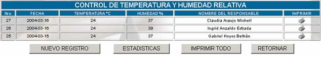

CONTROL DE TEMPERATURA Y HUMEDAD
De acuerdo con el manual de procedimiento de
administración de sistemas, se establecen los siguientes estándares en los
cuales se deben respetar.
- Se deberá mantener una temperatura entre los 10° C y 32°C.
- La Humedad relativa deberá estar entre 20% y 80%.
- Deberá estar alejado de zonas o dispositivos con campos
electromagnéticos, térmicos, vibración y protegido contra polvo y ruido.
La pantalla principal de esta opción se
presenta a continuación:

Nro;
especifica el número de control de temperatura y humedad relativa asignada por
el sistema automáticamente.
Fecha; especifica la fecha de control de temperatura y humedad relativa
Temperatura; especifica la temperatura registrada en la fecha y
la hora correspondiente
Humedad; Especifica el porcentaje de humedad relativa
registrada.
Nombre del responsable; especifica el nombre de la persona que realizó el
control de temperatura y humedad relativa.
Nuevo Registro; esta opción permite introducir los datos de
temperatura y humedad relativa al sistema y muestra la siguiente pantalla.

Hora; coloque la hora en la cual se está realizando el
registro de temperatura y humedad relativa.
Fecha; coloque
la hora en la cual se está realizado el registro de temperatura y humedad
relativa.
Temperatura °C; ingrese la temperatura registrada, solamente en
grados centígrados.
Humedad relativa (%); especifique
el porcentaje de humedad relativa medida en ese momento.
Nombre responsable; especifique su nombre, en caso de que sea usted
quien esté realizando este control.
Observaciones; si es que la temperatura o la humedad relativa
excede los parámetros especificados en el manual de procedimientos de sistemas,
realice las correspondientes observaciones.
Imprimir; esta opción permite obtener un reporte completo del
registro de la temperatura y humedad relativa que se puede imprimir.
Estadísticas; genera un cuadro estadístico de Temperatura y
Humedad.
Imprimir todo; esta opción permite obtener un reporte completo de
la lista actual, en formato de impresión.